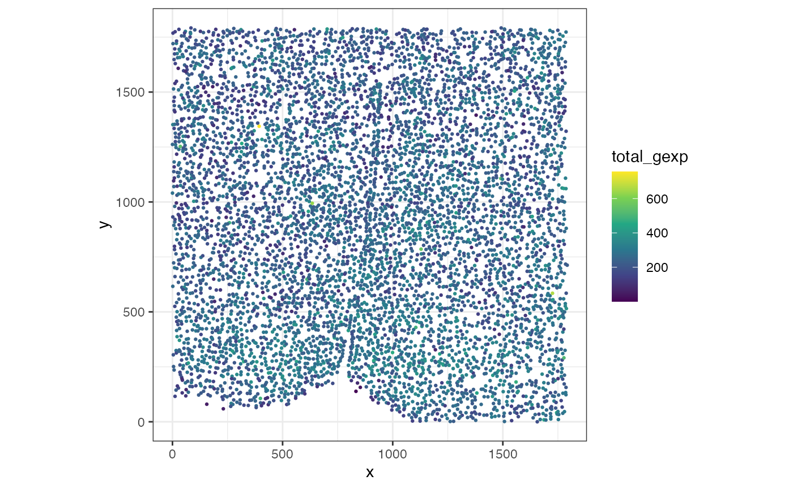
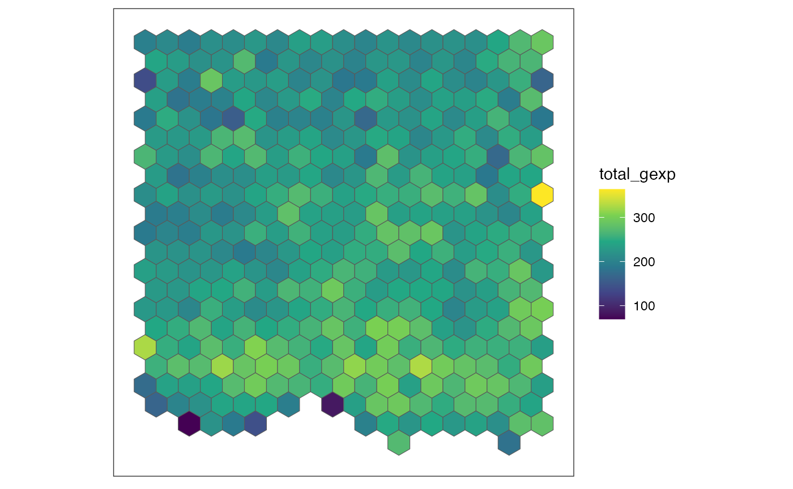
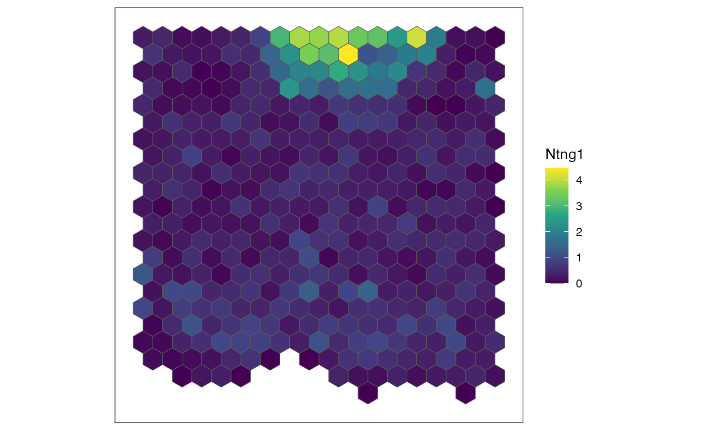
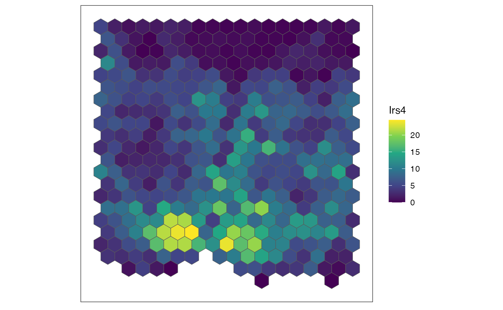
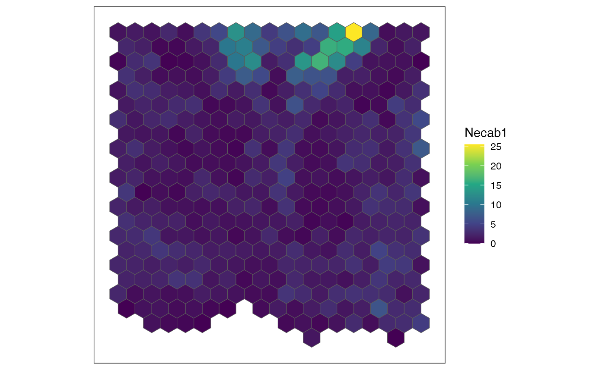
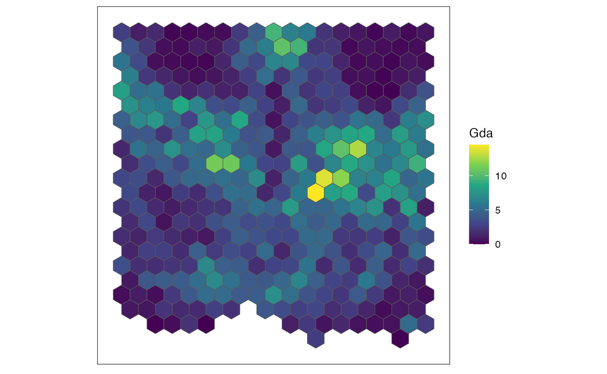
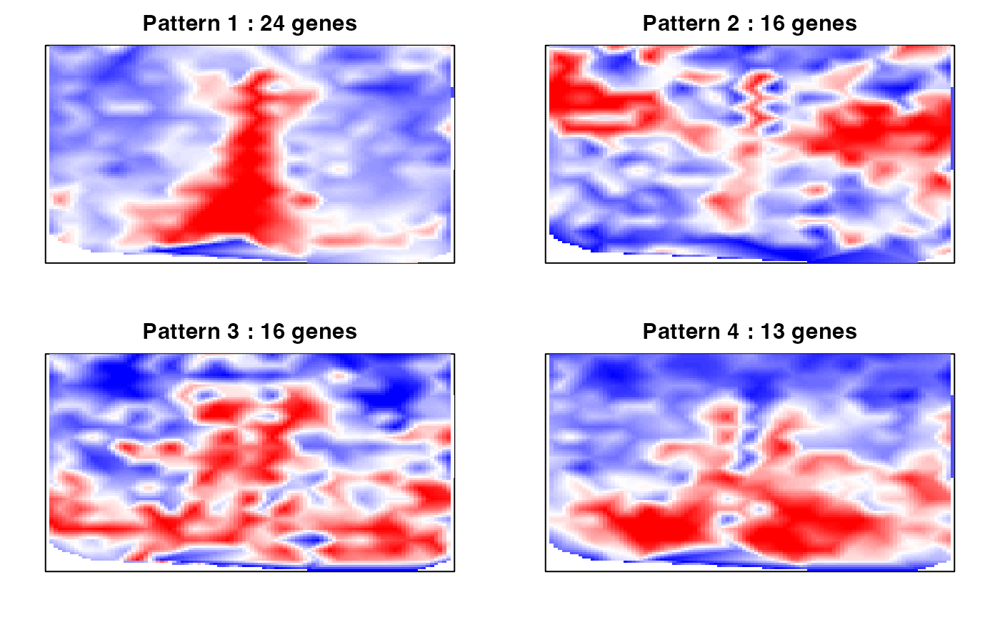
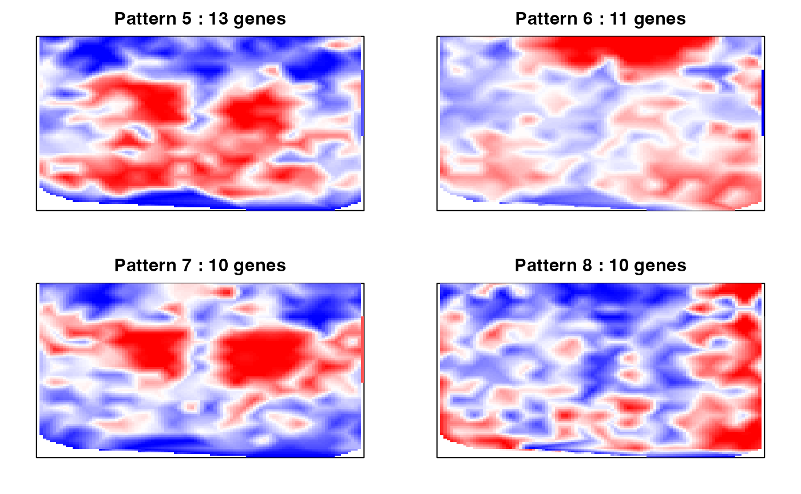
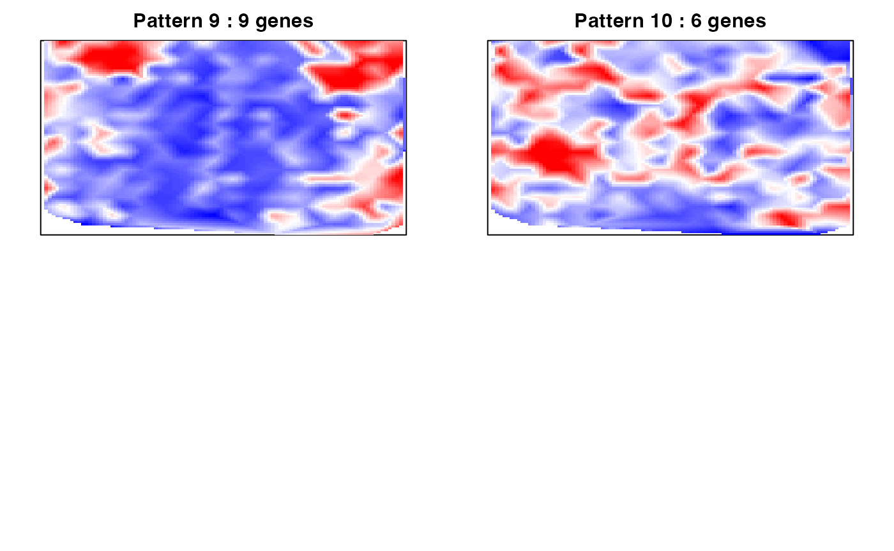

SEraster for Spatial Variable Genes Analysis
Source:vignettes/SEraster-for-SVG-analysis.Rmd
SEraster-for-SVG-analysis.RmdIn this tutorial, we will demonstrate how to use
SEraster as a preprocessing step prior to spatial variable
gene analysis with MERINGUE.
suppressMessages(library(SpatialExperiment))
suppressMessages(library(SEraster))
suppressMessages(library(Matrix))
suppressMessages(library(ggplot2))Load dataset
We will use the MERFISH mPOA (bregma -0.29 slice from a female naive animal) available in the SEraster package. The dataset is formatted as a Spatial Experiment object as shown here: (https://jef.works/SEraster/reference/merfish_mousePOA.html).
## [1] "SpatialExperiment"
## attr(,"package")
## [1] "SpatialExperiment"Let’s first plot the total gene expression at the single-cell resolution.
## pos is a matrix specifying a cell's x and y positions
pos <- spatialCoords(merfish_mousePOA)
## counts is a genes-by-cells matrix where the gene expression was normalized by cell volume and scaled by 1000
counts <- assays(merfish_mousePOA)$volnorm
df <- data.frame(pos, total_gexp = colSums(counts))
## plot
ggplot(df, aes(x = x, y = y, color = total_gexp)) +
coord_fixed() +
scale_color_viridis_c() +
geom_point(size = 0.5) +
theme_bw()
Rasterize gene expression using SEraster
The rasterizeGeneExpression function allows you to
rasterize gene expression at a resolution of your choosing. Below is an
example of rasterizing gene expression by calculating the mean
expression for all cells within each hexagonal pixel at 100 µm
resolution.
## let's rasterize the dataset at 100 um resolution.
res <- 100
rastGexp <- SEraster::rasterizeGeneExpression(merfish_mousePOA,
assay_name = "volnorm",
resolution = res,
square = FALSE,
fun = "mean")
SEraster::plotRaster(rastGexp, name = "total_gexp")
SEraster aggregated 6509 single-cells into 384 pixels,
with each pixel containing the normalized gene expression values using
mean. You can see how the dimension of SpatialExperiment
object is changed after rasterization.
## [1] 155 6509
## [1] 155 384Perform SVG analysis with MERINGUE
MERINGUE is a computational framework based on spatial
auto-correlation and cross-correlation analysis. It can be used to
identify genes with spatially heterogeneous expression patterns. Link to
install MERINGUE: (https://jef.works/MERINGUE/) First, let’s create an
adjacency weight matrix for the rasterized dataset.
suppressMessages(library(MERINGUE))
## Get neighbor-relationships
rastPos <- spatialCoords(rastGexp)
w <- MERINGUE::getSpatialNeighbors(rastPos, filterDist = 105)
plotNetwork(rastPos, w)
The adjacency weight matrix w contains the spatial
relationship of the 384 hexagonal pixels. Thus, each point in the plot
represents a hexagonal pixel. A line is drawn if the cells within that
pixel are spatial neighbors with cells within another pixels as defined
by the filterDist of 105. The filterDist is
the maximum Euclidean distance for which two cells cannot be considered
neighbors. This value was set based on the rasterized resolution of 100
um.
We can now calculate Moran’s I with the gene expression matrix and identify significantly spatially auto-correlated genes.
## rasterized genes-by-cells matrix, with cell pixels at 100 um resolution
mat <- assays(rastGexp)$pixel
I <- MERINGUE::getSpatialPatterns(mat, w)Based on Moran’s I calculations, 139 out of the 155 genes were identified as significantly spatially auto-correlated genes.
results.filter <- MERINGUE::filterSpatialPatterns(mat = mat,
I = I,
w = w,
adjustPv = TRUE,
alpha = 0.05,
minPercentCells = 0.05,
verbose = TRUE,
details = TRUE)## Number of significantly autocorrelated genes: 139## ...driven by > 19.2 cells: 128We can sort these spatially auto-correlated genes based their Moran’s
I statistic, as a higher I statistic generally correlates with greater
significance. Let’s identify the top three genes with the highest
Moran’s I statistics and visualize their expression patterns using the
plotRaster function in SEraster.
## sort spatially auto-correlated genes with Moran's I statistic
sortedResults <- results.filter[order(results.filter$observed, decreasing = TRUE), ]
## select 3 SVGs with the highest Moran's I
sgenes <- rownames(sortedResults)
for (sg in head(sgenes, 4)) {
## plot gene expression pattern
plt <- SEraster::plotRaster(rastGexp,
feature_name = sg,
name = sg)
show(plt)
}
We also can compute the spatial cross correlation matrix to group significantly spatially variable genes into primary spatial gene expression patterns.
## create a duplicate filtered results with details = FALSE this time
results.filter2 <- MERINGUE::filterSpatialPatterns(mat = mat,
I = I,
w = w,
adjustPv = TRUE,
alpha = 0.05,
minPercentCells = 0.05,
verbose = TRUE)## Number of significantly autocorrelated genes: 139## ...driven by > 19.2 cells: 128
## compute spatial cross correlation matrix
scc <- MERINGUE::spatialCrossCorMatrix(mat = as.matrix(mat[results.filter2,]),
weight = w)
# Identify primary patterns
par(mfrow=c(2,2), mar=rep(2,4))
ggroup <- MERINGUE::groupSigSpatialPatterns(pos = rastPos,
mat = as.matrix(mat[results.filter2,]),
scc = scc,
power = 1,
hclustMethod = 'ward.D',
deepSplit = 2,
zlim=c(-1.5,1.5))## Patterns detected:
## ..cutHeight not given, setting it to 5.61 ===> 99% of the (truncated) height range in dendro.
## ..done.
## groups
## 1 2 3 4 5 6 7 8 9 10
## 24 16 16 13 13 11 10 10 9 6